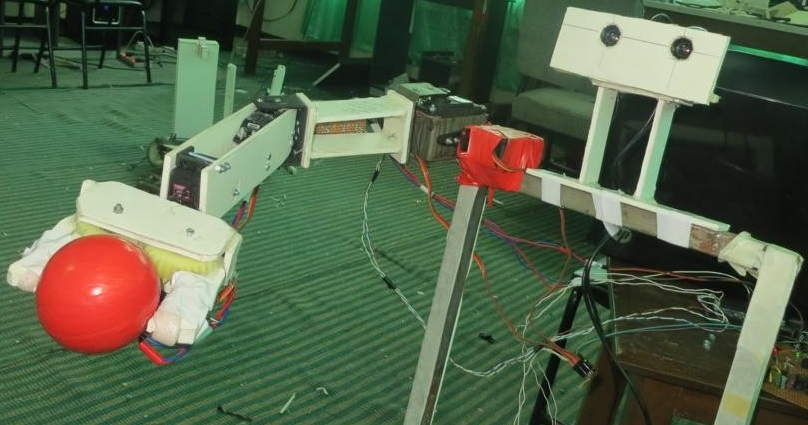

| This was an early development of my robotics journey. In the first version, it was able to locate a red ball using the Kinect depth sensor and then try to follow the movement of the user holding the ball. Later, an arm was developed and I tried to do visual servoing. Kinect has near field limitation and LIDAR wasn't available so I build a two-camera stereo set but it didn't perform better than the Kinect. I also developed a simple kinematics solver for the arm to reach defined coordinates. | |||||
|
Early version: Ball following This robot can detect a red ball and locate its distance from the robot frame. It has four wheels and runs through the differential drive. This robot detects the red ball and follows the person holding it by maintaining a certain distance. |
|||||
| Publications: |  |
||||